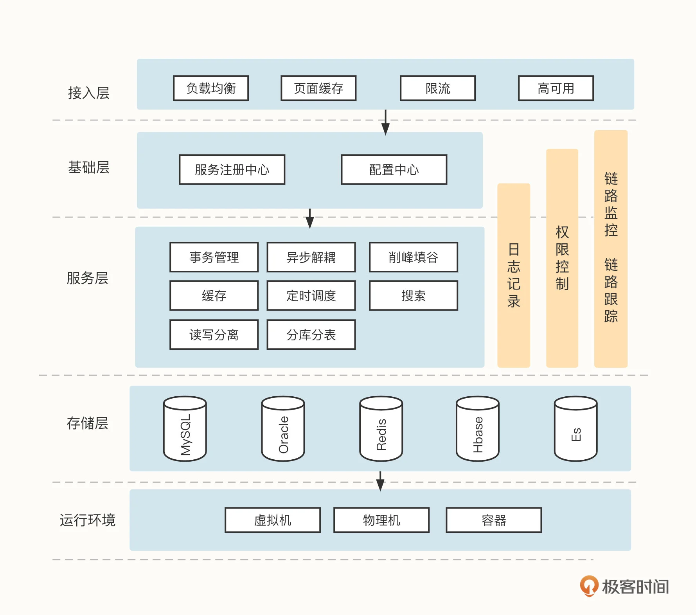
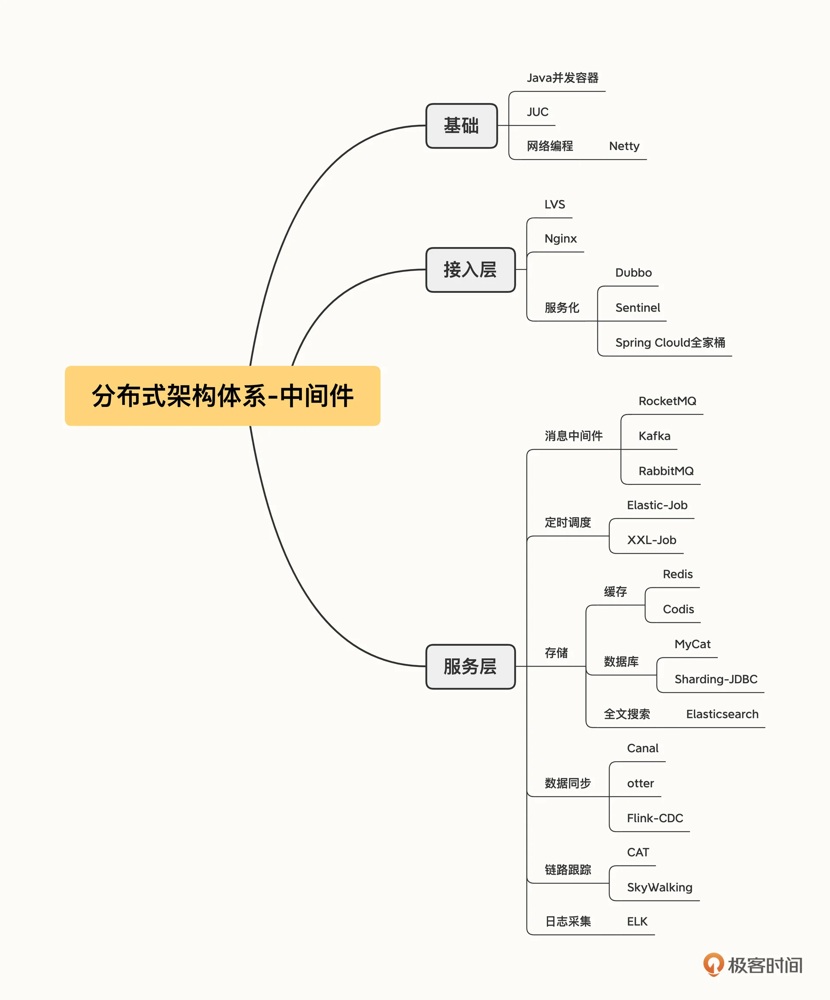
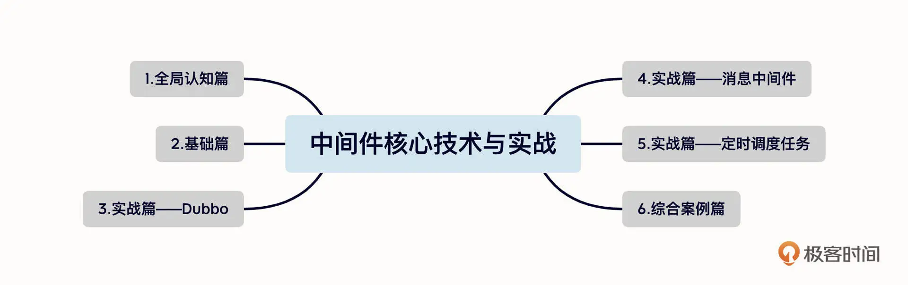

- 00 开篇词 为什么中间件对分布式架构体系来说这么重要？.md
- 01 中间件生态（上）：有哪些类型的中间件？.md
- 02 中间件生态（下）：同类型的中间件如何进行选型？.md
- 03 数组与链表：存储设计的基石有哪些？.md
- 04 红黑树：图解红黑树的构造过程与应用场景.md
- 05 多线程：多线程编程有哪些常见的设计模式？.md
- 06 锁：如何理解锁的同步阻塞队列与条件队列？.md
- 07 NIO：手撸一个简易的主从多Reactor线程模型.md
- 08 Netty：如何优雅地处理网络读写，制定网络通信协议？.md
- 08 加餐 中间件底层的通用设计理念.md
- 09 技术选型：如何选择微服务框架和注册中心？.md
- 10 设计原理：Dubbo核心设计原理剖析.md
- 11 案例：如何基于Dubbo进行网关设计？.md
- 12 案例：如何实现蓝绿发布？.md
- 13 技术选型：如何根据应用场景选择合适的消息中间件？.md
- 14 性能之道：RocketMQ与Kafka高性能设计对比.md
- 15 案例：消息中间件如何实现蓝绿？.md
- 16 案例：如何提升RocketMQ顺序消费性能？.md
- 17 运维：如何运维日均亿级的消息集群？.md
- 18 案例：如何排查RocketMQ消息发送超时故障？.md
- 19 案例：如何排查RocketMQ消息消费积压问题？.md
- 20 技术选型：分布式定时调度框架的功能和未来.md
- 21 设计理念：如何基于ZooKeeper设计准实时架构？.md
- 22 案例：使用分布式调度框架该考虑哪些问题？.md
- 23 案例：如何在生产环境进行全链路压测？.md
- 大咖助阵 高楼：我们应该如何学习中间件？.md
- 用户故事 学而时习之，不亦乐乎.md
- 用户故事 愿做技术的追梦人.md
- 用户故事 浪费时间也是为了珍惜时间.md
- 结束语 坚持不懈，越努力越幸运.md
00 开篇词 为什么中间件对分布式架构体系来说这么重要？
你好，我是丁威。
一名奋战在 IT 一线十多年的技术老兵，现任中通快递技术平台部资深架构师，也是 Apache RocketMQ 社区的首席布道师，《RocketMQ 技术内幕》一书的作者。
不知道你有没有发现这样一个现状，深度实践分布式架构体系还得看大厂，他们所提供的高并发、大数据等应用场景更是众多研发工程师的练兵地，给出的薪资、待遇、发展潜力也远超小平台。但说句现实点的，绝大多数 Java 从业人员其实都在干着 CRUD 的工作，并没有机会去实践高并发。一边是大厂牛人岗位的稀缺，一边是研发工程师的晋升无门，怎么打破这个死循环，自开一扇窗呢？
结合我自己的经历，加上这些年我对研发工程师的职场发展的思考，我觉得中间件这个细分赛道或许可以奋力一搏。甚至可以说，学习它已经是进入大厂的必备条件了。
第一阶段：高效工作
对于刚开始接触系统架构的人来说，熟练掌握中间件是高效工作的前提。因为中间件是互联网分布式架构设计必不可少的部分，几乎每一个分布式系统都有一种乃至几种中间件在系统中发挥作用。
中间件的这种持续发展和系统的内部结构有关。可以结合你们公司的业务想一下，为了追求高并发、高性能、高可用性还有扩展性，是不是在对软件架构进行部署时，通常会采用分层架构思想，将系统架构分为接入层、基础层、服务层、数据存储层和运行环境，而每一层需要解决的问题各不相同。就像这样一个系统架构模型。

但单凭这个架构并不能解决所有问题。试想一下，如果一家公司每做一个项目都要自己去实现一套事务管理、一套定时任务调度框架，那么他们的业务交付效率一定会很低。这不但会给开发编码带来极大的技术挑战，同时系统也需要面临高并发、大流量的冲击。在这么多未知的挑战和不可控的因素当中，要想交付一套稳定的系统可以说是困难重重。
好在随着分布式架构体系的不断演变，越来越多的优秀中间件应运而生。我们无需再重复造轮子，可以直接在项目中使用这些优秀的中间件，把更多精力放在业务功能的开发上，在提高交付效率的同时也使得系统更加稳定，一举多得。
中间件的种类非常多，不可能尽数列举。但我把各个领域主流的中间件汇总在一起，做了一张思维导图，供你随时查看：

那随着中间件的逐渐增多，必然会出现一个现象：各个项目基本都会用到一个或多个中间件。为了更加出色地完成工作，掌握这些中间件的使用方法、设计理念，了解它们的设计缺陷就成了我们的必修课。
第二阶段：突破高并发
入行一段时间之后，认识高并发、突破高并发就成了我们每个人都要面对的问题。
中间件和高并发密切相关，这是因为每一款优秀的中间件几乎都是由各个行业中的头部企业贡献的。中间件的诞生几乎无一例外都是为了解决特定业务领域的技术挑战，需要满足高并发、高性能、高可用三大功能。也就是说，每一款中间件的设计理念、代码编码都会遵循高并发领域的一些常见理论。
例如，我们非常熟悉的消息中间件 Apache RocketMQ，它承载了阿里“双十一”巨大的流量，那它具体是如何应对这一场景的？又采用了什么“牛逼”的技术架构？
尽管我们暂时没有机会参与阿里双十一这样的大流量场景，没法从第一现场了解这些问题，但我们可以通过深入学习和研究 Apache Apache 项目去体会高并发编程的魅力，让 Apache RocketMQ 中的编程技巧成为我们的“经验”。这样一来，我们不就可以用最低成本轻松拿下高并发场景了吗？
再说回职场晋升，我相信你也和我一样，在准备面试时总会先背诵一下“零拷贝”相关的理论知识，因为它是一个非常高频的面试题。但你知道怎么在项目中实际运用零拷贝技术来提升系统的性能吗？
听到这个问题是不是没了思路？其实，RocketMQ 作为一款文件存储领域非常知名的消息中间件，就运用了“零拷贝”技术，这部分内容也会在我的专栏中体现。我们要做的只是翻阅对应的源码，进行相应的练习和总结，就可以真正掌握“零拷贝”了。
讲到这里你应该也发现了，中间件是我们突破高并发的利器。它能够最大程度弥补我们缺少的高并发场景实战经验，为我们提供最优秀的项目实践机会。
第三阶段：防患于未然
那是不是只要能够熟练使用这些技术、框架就够了呢？
我认为，中间件的学习进程到这里还远没有结束。由于中间件在分布式互联网架构体系中占据着非常重要的位置，因此，很多故障都和中间件的使用不当有关。只有深入中间件的底层设计原理，读懂源码，才能将很多问题扼杀在摇篮中。
相反，如果故障已经发生了，哪怕你的故障排查能力和处理能力再强，一旦出了问题，就会对业务造成重大影响或者给公司带来资金损失，这些都是无法挽回的。
为了尽可能避免这类问题，很多公司都设置了故障追责机制。例如，阿里巴巴就有“325”，意思是，如果你的系统出现了一次比较大的故障，那么绩效得分为 325，全年绩效为 0。这样的问题我想是大家都不愿意看到的。
不过，只要我们加强对中间件工作机制的了解，提前发现系统的“病灶”，及时规避掉风险，就能防止公司和个人面临不可估量的损失。
课程设计
总结一下，学好中间件可以提高我们的工作效率、突破高并发瓶颈，还能防患于未然，极大地减少公司和个人的损失。如果你对这些问题感兴趣，那我的专栏就是为你打造的。
《中间件核心技术与实战》共分为六个模块。

在全局认知篇，我会介绍中间件在互联网分布式架构体系中的整体面貌，并重点对数据库、缓存等中间件的发展和选型依据做详细的介绍，帮助你更快掌握技术架构的发展方向，合理选择中间件。
在基础篇，我会系统讲解中间件必备的基础知识，主要包括 Java 常用数据结构、并发编程与网络编程。通过图解的方式，你可以更好地吸收这些原理，不再像背诵八股文一样学习理论知识，而是通过技术背后的设计理念，做到一通百通。
实战篇是我们全专栏最核心的内容，它分为微服务体系 Dubbo、消息中间件和定时调度任务三个部分。我会按照设计理念、选型标准、实战演练的顺序展开。带你从理论到实践，解决实际生产中遇到的问题。
最后是综合案例篇，我给你提供了一个全链路压测的落地项目，方便你全方位地串起各个主流中间件，完成对中间件的综合应用。
学完这个专栏，你应该能够对中间件的主要分类有更宏观地了解，掌握微服务、消息中间件、定时调度框架的设计场景，灵活应对高并发场景。
写在最后
最后我想说，中间件是分布式架构绕不开的话题，对于主流的中间件，你可能早就听说或者使用过，但是，中间件始终在发展和迭代，为了适应未来的变化、从容应对庞大的数据量，我们应该走得更深、更扎实一些，打造自己难以被撼动的职场竞争力。
回想我自己 10 余年的奋斗经历，正是不断的学习让我实现了职位和技能的突破。在我职业生涯的前几年，因为没有良好的教育背景，又长期在传统行业从事电子政务相关系统的开发，我无缘接触高并发，成为了一名“CRUD 工程师”。
好在，2017 年我迎来了自己职业生涯的转折点。这一年，RocketMQ 正式成为 Apache 顶级开源项目，通过研读 RocketMQ 的架构设计、编程技巧，我彻底突破了高并发门槛，找到了向大厂晋升的那扇窗。
在这期间，我也总结出了一套学习中间件的基本方法论，学完这些内容，如果你对其他类型的中间件也很感兴趣，可以用这个方法持续深挖，更高效、透彻地掌握其他类型的中间件。
阅读官方架构设计文档，从整体上把握这款中间件的架构、设计理念、工作机制。
阅读官方用户手册文档，初步了解如何使用这款中间件。
搭建自己的开发调试环境，运行官方 Demo 示例，进一步掌握这款中间件的使用方法。
结合中间件的架构设计文档、亮点技术追溯源码，掌握落地细节并举一反三，结合使用场景进行理解。这是彻底掌握中间件的关键。
好了，说了这么多，我想最重要的还是迈出学习的第一步。如果你对中间件有所困惑，或者希望在高并发场景中游刃有余，那就和我一起开启这次学习之旅吧，我们下节课见！
© 2019 - 2023 Liangliang Lee. Powered by gin and hexo-theme-book.